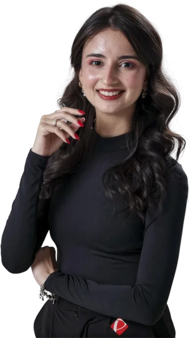
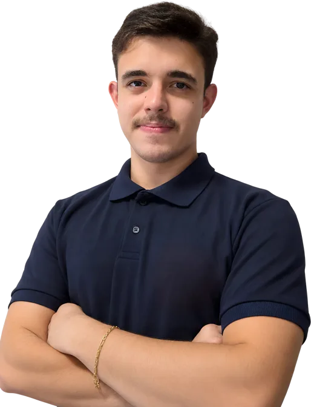

Por quê
Nosso propósito
Reduzir a distância entre a existência dos mecanismos de proteção e a capacidade de pessoas e instituições de utilizá-los de forma consciente e responsável.
O FAROL é uma iniciativa de prevenção, orientação e proteção de crianças e adolescentes diante de situações de violência sexual, aliciamento, exploração e tráfico de pessoas — nos ambientes físicos e digitais.
Assim como um farol não elimina os perigos do percurso, mas oferece referências para uma navegação mais segura, o projeto ilumina caminhos de prevenção e proteção.
Existe uma diferença importante entre estar próximo de uma possível situação de violência e saber como responder a ela com segurança. O FAROL nasce para reduzir essa distância: preparar profissionais e instituições que convivem com crianças e adolescentes para reconhecer situações de risco, acolher adequadamente e acionar a rede de proteção — sem assumir funções que pertencem aos órgãos especializados.
Concebido como iniciativa de finalidade social, com proposta de estruturação associativa sem fins lucrativos, o FAROL não cria um sistema paralelo de proteção: fortalece a rede que já existe.
Reduzir a distância entre a existência dos mecanismos de proteção e a capacidade de pessoas e instituições de utilizá-los de forma consciente e responsável.
Integrar conhecimentos jurídicos, educacionais, sociais e tecnológicos, transformando informação especializada em orientações acessíveis e aplicáveis a cada realidade institucional.
Capacitações para profissionais da educação, cartilhas e materiais informativos, atividades pedagógicas por faixa etária, conteúdos de segurança digital e divulgação dos canais oficiais de proteção.
O nome FAROL reúne as dimensões complementares que orientam uma atuação preventiva responsável.
Desenvolvimento de conhecimentos e competências como base para a prevenção e para ambientes mais seguros.
Escuta qualificada, empatia e vínculos de confiança como ponto de partida para identificar situações de risco.
Articulação entre pessoas, instituições e serviços para garantir caminhos seguros de encaminhamento e suporte.
Informação clara, segura e baseada em evidências para apoiar escolhas mais seguras no ambiente escolar e digital.
Garantia do direito ao desenvolvimento, à dignidade e à proteção contra práticas que comprometam autonomia e futuro.
Os dados mostram a dimensão do problema — e por que a prevenção depende de adultos e instituições preparados para reconhecer sinais e agir.
vítimas de estupro e estupro de vulnerável entre 0 e 19 anos no Brasil, de 2021 a 2023.
UNICEF; FBSP. Panorama da Violência Letal e Sexual contra Crianças e Adolescentes no Brasil, 2024.nas notificações de violência sexual (0 a 19 anos) entre 2014 e 2024: de 9.897 para 43.849 registros.
Ipea; FBSP. Atlas da Violência 2026 (Sinan/MS). Dados de 2024 preliminares.dos usuários de internet de 12 a 17 anos sofreram alguma forma de exploração ou abuso sexual facilitado pela tecnologia em 12 meses.
UNICEF Innocenti; ECPAT; INTERPOL. Disrupting Harm in Brazil, 2026. Estimativa amostral.denúncias anônimas de abuso e exploração sexual infantil na internet entre janeiro e julho de 2025 (+18,9%).
SaferNet Brasil, 2025. Refere-se a conteúdos denunciados, não a vítimas distintas.O aumento de registros não equivale, necessariamente, ao aumento real da violência: também reflete maior capacidade de notificação e conscientização. O FAROL trabalha esses dados sob uma perspectiva educativa — a prevenção não depende do medo, mas do acesso ao conhecimento.
As relações presenciais e virtuais não são realidades separadas. Por isso, o FAROL atua em duas frentes complementares, com uma identidade metodológica comum.
Capacitação de profissionais da educação e atividades preventivas no ambiente escolar — uma metodologia formativa estruturada, que vai além de palestras pontuais.
Conteúdos educativos sobre os riscos e cuidados nas redes sociais, jogos conectados, aplicativos de mensagens e ferramentas de inteligência artificial.
Organiza categorias educativas para a leitura preventiva de situações, sem pontuação de risco nem rótulos sobre pessoas.
Orienta o acolhimento, o registro estritamente necessário e o encaminhamento responsável.
Diretório de canais oficiais, com finalidade, abrangência e data de verificação de cada serviço.
A forma como o adulto reage pode influenciar a segurança da criança, a continuidade da busca por ajuda e o risco de revitimização. Estas são referências gerais, que não substituem os protocolos da sua instituição.
Nenhum desses sinais, isoladamente, comprova violência. Eles indicam a necessidade de observação cuidadosa e de buscar orientação — sem transformar suspeitas em acusações.
Fluxo ilustrativo, sujeito à validação com a escola e a rede territorial. Providências urgentes não devem ser retardadas pela sequência administrativa.
Crianças e adolescentes como sujeitos de direitos, com seu melhor interesse em todas as etapas.
Reconhecer riscos não é antecipar conclusões: evitamos estigmas e acusações infundadas.
Sem interrogatórios, repetição de relatos ou exposição de experiências pessoais.
Linguagem acessível, sem conteúdos inadequados à idade ou abordagens sensacionalistas.
Direito, Psicologia, Serviço Social, Educação e Saúde, cada um em sua competência.
Atuação em colaboração com a rede existente, sem estruturas paralelas de investigação.
Minimização de dados como pressuposto, em conformidade com a LGPD.
Avaliação metodológica, revisão técnica e análise crítica contínua dos resultados.
Antes de qualquer ampliação, a metodologia será aplicada experimentalmente, avaliada e aperfeiçoada. A continuidade será orientada pela qualidade e segurança — não apenas pela quantidade de instituições alcançadas.
Seleção, formalização, levantamento e matriz de necessidades da instituição.
Plano de execução, organização dos materiais e definição de responsabilidades.
Formação, atividades educativas e aplicação das ações digitais.
Avaliação posterior, relatório, devolutiva e ajustes metodológicos.
Diferentes órgãos atuam conforme a natureza dos fatos e o território. Não há um canal único para todos os casos — estes são os principais caminhos.
Emergência, risco imediato à vida ou crime em andamento.
Ligar agora → 100Serviço público e gratuito, todos os dias, para denúncias de violações de direitos de crianças e adolescentes.
Saiba mais →Deve ser procurado diante de ameaça ou violação de direitos de crianças e adolescentes.
Central Nacional de Denúncias de crimes cibernéticos, incluindo abuso sexual infantil na internet.
Denunciar →O FAROL é uma iniciativa educativa. Não recebe denúncias, não realiza atendimento de emergência e não substitui Conselho Tutelar, Ministério Público, polícia, serviços de saúde, assistência social ou profissionais especializados. Nunca envie relatos, imagens ou dados pessoais pelos nossos canais. A indicação de órgãos públicos não significa parceria formal ou endosso estatal.
Acadêmicos do 9º semestre de Direito da ESAMC Uberlândia, unindo conhecimento jurídico e compromisso social para transformar conhecimento em orientação, prevenção e proteção.



Transformar conhecimento em orientação, prevenção e proteção.Escolas, redes de ensino e organizações interessadas no projeto-piloto, em capacitações ou em cooperação institucional podem conversar com a equipe.